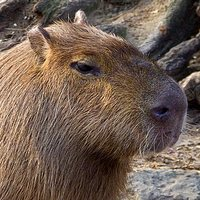
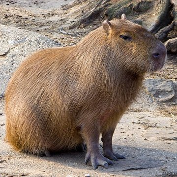

← Jocurile lui Rebe
🐾 Aventura lui Capi
⭐
0
🔊
🌳 Pădurea Numerelor
0 / 50
🗺️ Toată harta
🍊
🍊
🍊
♨️ Izvorul cald
Livada Înmulțirii
Podul lui Calculo
Muntele Sutelor
Râul Adunărilor
Pădurea Numerelor
Acasă

Bună, Rebe! Sunt Capi, capibara. 🐾
💡 Indiciu

🍊